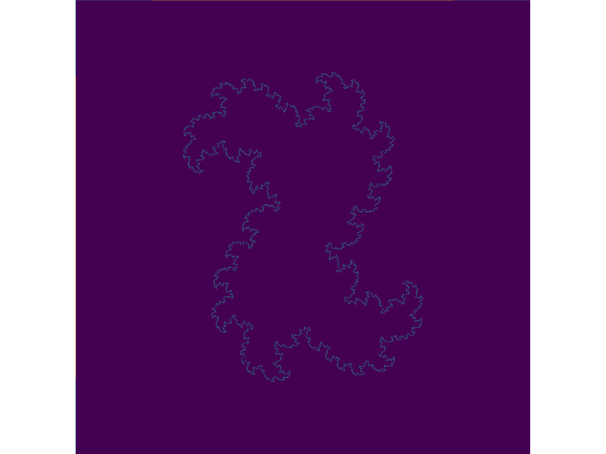
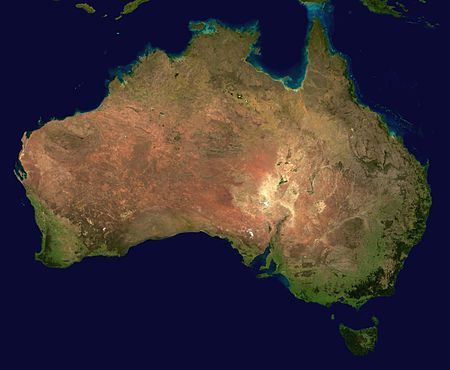
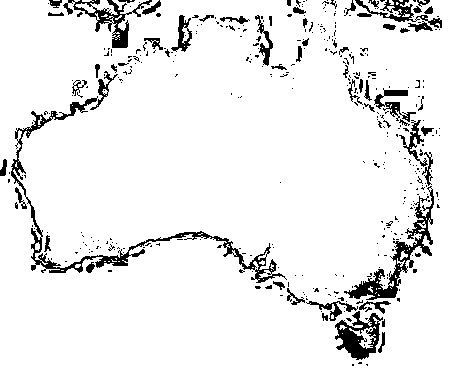

Fractal Dimensions
Table of Contents
1 Backlinks
2 Introduction
The concept of dimension is typically used to describe the number of perpendicular edges an object has or the number of non-interacting features in a data set.
2.1 Examples
This concept can be expanded however, consider the area of an \(a\times a\) square:
\[ A = a \times a \]
If this shape was scaled by by some value \(s\) the area would hence be:
\[ A = as \times as = \left( as\right)^{2} \]
for a cube the corresponding measure, volume, would change such that:
\[ V = as \times as \times as = \left( as\right)^{3} \]
2.2 General
This index can be considered as the dimension of that shape. So for example a square would be two dimensional because:
- when scaled the measure of the square is
proportional to the 2nd power of the scaling factor
So generally this relationship holds true with the dimensionality of a shape:
\[ M \propto s^{d} \]
A natural question might be what is the corresponding dimension of a fractal?
2.3 What is a fractal
I should probably read up on this but generally a fractal isn’t necessarily self-similar
One property of a fractal is that the dimension of such a shape is a non-integer value.
Shapes that occur in nature have non-integer values generally.
3 How to Measure the Dimension
Find the slope between the \(s\) and \(m\)
3.1 Box Counting with the Julia Set
3.1.1 Define the Julia Set
Define the Julia Set
function juliaSet(z, num, my_func) count = 1 # Define z1 as z z1 = z # Iterate num times while count ≤ num # check for divergence if abs(z1)>2 return Int(count) end #iterate z z1 = my_func(z1) # + z count=count+1 end #if z hasn't diverged by the end return Int(num) end
3.1.2 Create a Matrix
function make_picture(width, height, my_func) pic_mat = zeros(width, height) zoom = 0.3 for i in 1:size(pic_mat)[1] for j in 1:size(pic_mat)[2] x = (j-width/2)/(width*zoom) y = (i-height/2)/(height*zoom) pic_mat[i,j] = juliaSet(x+y*im, 256, my_func) end end return pic_mat end
3.1.3 Make the Outline
The Julia Set is defined as the outline, so to visualise this we need to redefine the matrix to only show the outline:
test_mat = make_picture(600,600, z -> z^2 + 0.37-0.2*im) for row in 2:(size(test_mat)[1]-1) for col in 2:(size(test_mat)[2]-1) ## Make instand divergence zero if abs(test_mat[row, col]) <= 100 # Although 100 is arbitrary, anything less hides the shape test_mat[row, col] = 0 # TODO make this a var, convergence_threshold end ## Make everything else 1 if abs(test_mat[row, col]) >= 100 test_mat[row, col] = 1 end # print(test_mat[row,col], ", ") end end work_mat = copy(test_mat) for row in 2:(size(test_mat)[1]-1) for col in 2:(size(test_mat)[2]-1) ## Make the inside 0, we only want the outline neighbourhood = test_mat[row-1:row+1,col-1:col+1] if sum(neighbourhood) >= 9 # 9 squares work_mat[row,col] = 0 end end end
3.1.4 Visualise the Matrix
There are many tools for this, Makie (not with Nvidia), GR, PlotlyJS, BasePlot, PyPlot, GadFly etc.
GR is the fastest So I’m using that (although PyPlot opens inside VSCode)
using GR GR.imshow(work_mat) # PyPlot uses interpolation = "None"

3.1.5 Count some boxes
No counting the outside is easy just:
sum(test_mat)
3.1.5.1 How to Find the Dimension
I just need to:
- Wrap it in a function
- Use a loop to create a dataframe
- Perform linear regression to find the dimension value
I haven’t had time
3.1.5.2 Preliminary Investigation
| Resolution | Perimiter | \(\delta\) |
| 50 | 791 | |
| 100 | 2523 | 3.18 |
| 200 | 8793 | 3.48 |
| 400 | 32481 | 3.69 |
| 800 | 124605 | 3.84 |
| 1600 | 487803 | 3.914 |
| 3200 | 1930000 | 3.956 |
It appears to be converging to the value 4 and \(log_{2}(4) = 2\) so the dimension would be 2.
3.2 Linear Regression
An approach more applicable to applied math is:
\[ M \propto s^{d} \implies \log(M) \propto d \log(s) \]
If the value \(d\) is constant across a constant range of slopes the shape is a fractal.
This can be used to find the dimension of a natural fractal
3.2.1 Applying to real world examples
to do this use Gimp or ImageMagick:
magick out.png -colorspace gray -color-threshold 'gray(46.4152%)-gray(55.3278%)' out2.fits
This will take something like this:

3.2.1.1 Output Image
And give back something like this:

Then AstroPy or AstroJulia can import the image as a matrix.